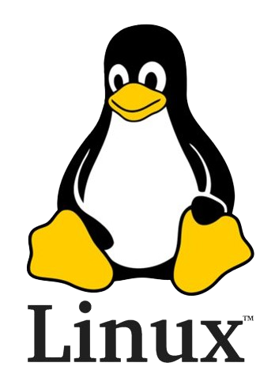

Na počátku vývoje moderních OS byl víceúlohový a víceuživatelský systém UNIX, který se od 70. let používal v sálových počítačích i minipočítačích. Jeho principy využily i další OS. V 80. letech minulého století si vzájemně konkurovaly systémy firmy Microsoft (MS DOS), instalované na počítačích IBM PC, a firmy Apple (Mac OS), která rozvinula myšlenky vývojářů společnosti Xerox a začala jako první používat grafické uživatelské rozhraní. To se stalo také základem MS Windows, jenž hrál prim především na přelomu tisíciletí. V té době už získával stále větší popularitu volně šiřitelný systém Linux, pojmenovaný podle svého tvůrce Linuse Torvaldse a staršího vzoru UNIXu. Zatímco operační systémy Windows dominují především na osobních počítačích v domácnostech i kancelářích, různé linuxové distribuce jsou velmi často instalovány na síťových serverech.
